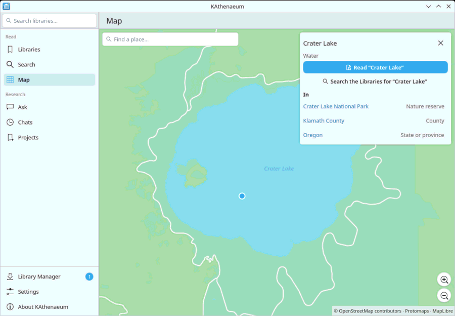

Choose Map in the sidebar. Drag to move, scroll or use the and buttons to zoom, double-click to zoom in. Find a place… finds places by name in the regions you have.
Click a place (a city, a building, a park, a lake) to see what it is. opens its Wikipedia article from your libraries: OpenStreetMap often records which article describes a place, so “Portland” opens “Portland, Oregon”. In lists what the place lies within (its park, town, county, state), each with its article. When no article is known, searches for the place's name.

The map opens where you left it. Map data © OpenStreetMap contributors, drawn with tiles from Protomaps.